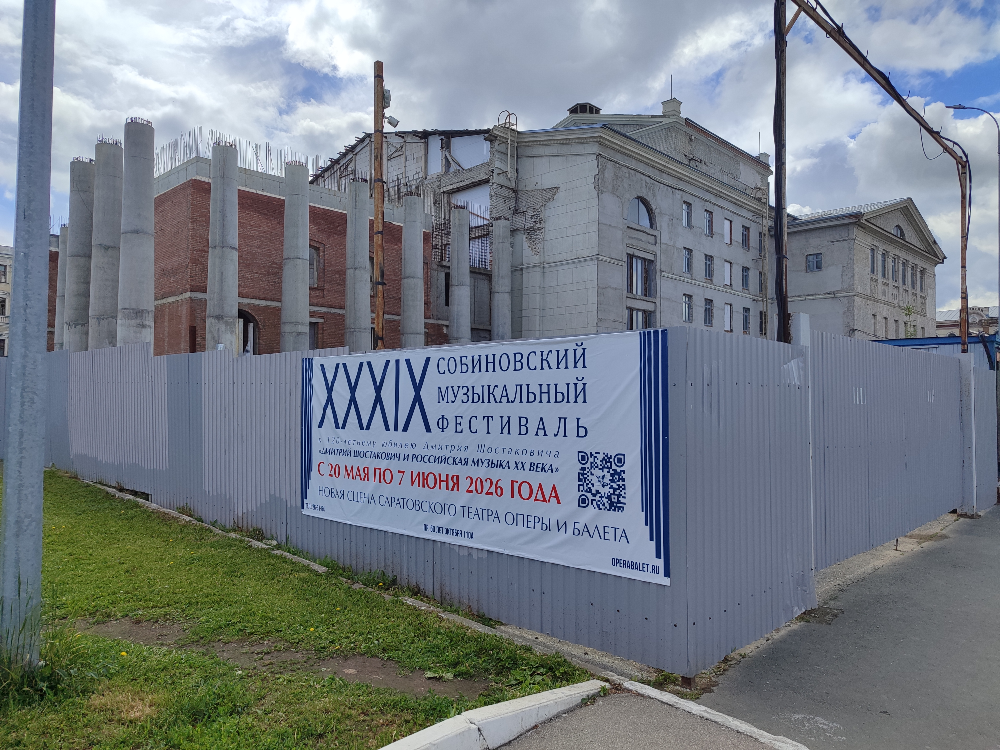

Седьмой год подряд реконструируется Саратовский театр оперы и балета, расположенный на главной площади города. Сейчас этот долгострой, ставший памятником коррупции, выглядит как руины древнего амфитеатра. В апреле этого года куратор региона Вячеслав Володин потребовал до конца 2027 года восстановить его, но слова остаются словами. Выделенные миллиарды осели в карманах, а работы выполнены не были. Только из федерального бюджета «пропали», как выразился Володин, 1,6 миллиарда рублей. Пока эти деньги не найдены, выделяются новые. Из дефицитного областного бюджета было выделено 350 миллионов рублей в апреле и ещё 250 миллионов в мае. Общая стоимость восстановления, по разным оценкам, составляет около 3 миллиардов рублей.
Единственное, чего добились чиновники за эти годы, помимо осваивания бюджета, — уголовные дела:
— Главный инженер театра Александр Колесников, получивший 1,6 миллиона взяткой, приговорён к 5 годам колонии.
— Бывший начальник управления капитального строительства Владимир Шевцов осуждён за превышение полномочий.
— Руководитель комитета по реализации инвестпроектов Роман Карякин, подписавший документы за непоставленное оборудование на сумму 165 миллионов рублей, также сел за злоупотребление.
— Выполнявший работы подрядчик ООО «Адепт Строй» признан банкротом.
Даже законсервировать долгострой нормально не смогли. На ремонт разрушенной в конце прошлого года кровли потребовалось 1,3 миллиона рублей. Объявлен конкурс на выполнение работ по сохранению театра, подрядчик должен укрепить стены, усилить проёмы. Работы должны быть выполнены до конца этого года, но подрядчик ещё не выбран.
Восстановят ли театр к концу этого или следующего года? Очень сомнительно. В условиях дефицитного областного бюджета (дефицит — почти 30 миллиардов, госдолг — почти 50).
Должно быть стыдно, что на главной площади города, куда на каждый праздник приходят люди, приезжают туристы и где по выходным устраивают ярмарки, стоит разрушенное здание культуры. Оно, как символ коррупции, говорит о Саратове лучше, чем сотни строк писателей и поэтов.